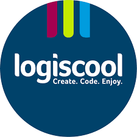

A Digitális Témahét Magyarország legnagyobb digitális pedagógiai eseménye. 2016-ban indult útjára az Emberi Erőforrások Minisztériumának kezdeményezésére. Az ebben a tanévben tizedik alkalommal, a Belügyminisztérium támogatásával, az Ökumenikus Segélyszervezet az Oktatásért Alapítvány szakmai koordinációjával megrendezésre kerülő Digitális Témahét célja, hogy a digitális eszközökkel támogatott projektpedagógia és innovatív pedagógiai módszerek
Részletek